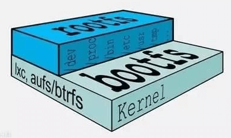

入门¶
谈 Docker 必谈容器（Container），我们简单看看现实世界中容器的概念。
容器是一种基础工具；泛指任何可以用于容纳其他物品的工具，可以部分或完全封闭，被用于容纳、存储、运输物品；物体可以被放置在容器中，而容器则可以保护内容物；
人类使用容器的历史至少有十万年，甚至可能有数百万年的历史；
容器的类型
瓶 —— 指口部比腹部窄小、颈长的容器
罐 —— 指那些开口较大、一般为近圆筒性的器皿
箱 —— 通常是立方体或圆柱体。形状固定
篮 —— 以条状物编织而成
桶 —— 一种圆柱形的容器
袋 —— 柔性材料制成的容器，形状会受内容物而变化
瓮 —— 通常是指陶制，口小肚大的容器
碗 —— 用来盛载食物的容器
柜 —— 指一个由盒组成的家具
鞘 —— 用于装载刀刃的容器
概念¶
LXC(LinuX container)¶
虚拟化于容器之间的关系

虚拟化常见的两种形式：
主机级虚拟化
Type-I —— 寄生架构
Type-II —— 裸金属架构
容器级虚拟化
chroot
namespace —— 内核级别的环境隔离
cgroups —— 用户空间的资源分配
chroot¶
chroot 是属于 Unix 系统中的初级虚拟化技术，虚拟的是文件系统的目录结果，用于隔离。chroot 也是最早出现的这类技术，1982 年就有了应用，后来者如 FreeBSD 的 Jail 和 Linux 的 LXC 都是 chroot 的增强，最终还无意引出了 docker 技术。
chroot，即 change root directory。在 Linux 系统中，系统默认的目录结构都是以根（root）开始的。而在使用 chroot 之后，系统的目录结构将以指定的位置作为根目录。
Linux Namespace¶
Linux Namespace 是 Linux 提供的一种内核级别环境隔离的方法。不知道你是否还记得很早之前的 Unix 有一个叫 chroot 的系统调用（通过修改根目录把用户 jail 导一个特定目录下），chroot 提供了一种简单的隔离模式：chroot 内部的文件系统无法访问外部的内容。Linux Namespace 在此基础商，提供了对 UTS、IPC、mount、PID、network、User 等的隔离机制。
举个例子，我们都知道，Linux 下的超级父亲进程的 PID 是 1，所以，同 chroot 一样，如果我们可以把用户的进程空间 jail 到某个进程分支下，并像 chroot 那样让其下面的进程看到的哪个超级父进程的 PID 为 1，于是就可以达到资源隔离的效果了（不同的 PID namespace 中的进程无法看到彼此）。
分类 |
系统调用参数 |
隔离内容 |
相关内核版本 |
|---|---|---|---|
Mount namespace |
CLONE_NEWNS |
挂载点（文件系统） |
Linux 2.4.19 |
UTS namespace |
CLONE_NEWUTS |
主机名和域名 |
Linux 2.6.19 |
IPC namespace |
CLONE_NEWIPC |
信号量、消息队列和共享内存 |
Linux 2.6.19 |
PID namespace |
CLONE_NEWPID |
进程编号 |
Liunx 2.6.24 |
Network namespace |
CLONE_NEWNET |
网络设备、网络栈、端口等 |
始于 Linux 2.6.24 完成于 Linux 2.6.29 |
User namespace |
CLONE_NAWUSER |
用户和用户组 |
始于 Linux 2.6.23 完成于 Linux 3.8 |
主要是三个系统调用
clone()
实现线程的系统调用，用来创建一个新的进程，并可以通过设计上述参数达到隔离。
unshare()
使某进程脱离某个 namespace
setns()
把某个进程加入到某个 namespace
cgroups¶
blkio: 块设备IO
cpu: CPU
cpuacct: CPU 资源使用报告
cpuset: 多处理器平台上的 CPU 集合
devices: 设备访问
freezer: 挂起或恢复任务
memory: 内存用量及报告
perf_event: 对 cgroup 中的任务进行统一性能测试
net_cls: cgroup 总的任务创建的数据报问的类别标识符
CGroup 是 Control Groups 的缩写，是 Linux 内核提供的一种可以限制、记录、隔离进程组（Process groups）所使用的物理资源（如 CPU Memory I/O 等）的机制。2007 年进入 Linux 2.6.24 内核，CGroups 不是全新创造的，它将进程管理从 cpuset 中剥离出来，作者是 Google 的 Paul Menage。CGroups 也是 LXC 为实现虚拟化所使用的资源管理手段。
CGroup 功能及组成
CGroup 是将任意进程进行分组化管理的 Linux 内核功能。CGroup 本身是提供将进程进行分组化管理的功能和接口的基础结构，I/O 或内存的分配控制等具体的的资源管理功能是通过这个功能来实现的。这些具体的资源管理功能称为 CGroup 子系统或控制器。CGroup 子系统有控制内存的 Memory 控制器、控制进程调度的 CPU 控制器等。运行中的内核可以使用的 CGroup 子系统由 /proc/cgroup 来确认。
CGroup 提供了一个 CGroup 虚拟文件系统，作为进行分组管理和各个子系统设置的用户接口。要使用 CGroup，必须挂载 CGroup 文件系统。这时通过挂载选项指定使用哪个子系统。
CGroup 支持的文件种类
文件名
R/W
用途
Release_agent
RW
删除分组时执行的命令，这个文件之存在于根分组
Notify_on_release
RW
设置是否执行 release_agent。为 1 时执行
Tasks
RW
属于分组的线程TID列表
Cgroup.procs
R
属于分组的进程 PID 列表。仅包括多线程进程的线程 leader 的 TID，这点与 tasks 不同
Cgroup.event_control
RW
监视状态变化和分组删除事件的配置文件
CGroup 相关概念解释
任务（task）
在 cgroups 中，任务就是系统的一个进程
控制族群（control group）
控制族群就是一组按照某种标准划分的进程。Cgroups 中的资源控制都是以控制族群为单位实现。一个进程可以加入到某个控制族群，也从一个进程组迁移到另一个控制族群。一个进程组的进程可以使用 cgroups 以控制族群为单位分配的资源，同时受到 cgroups 以控制族群为单位设定的限制。
层级（hierarchy）
控制族群就是一组按照某种标准划分的进程。Cgroups 中的资源控制都是以控制族群为单位实现。一个进程可以加入到某个控制族群，也从一个进程组迁移到另一个控制族群。一个进程组的进程可以使用 cgroups 以控制族群为单位分配的资源，同时受到 cgroups 以控制族群为单位设定的限制；
子系统（subsystem）
一个子系统就是一个资源控制器，比如 cpu 子系统就是控制 cpu 时间分配一个控制器。子系统必须附加（attach）到一个层级上才能起作用，一个子系统附加到某个层级以后，这个层级上的所有控制族群都受到这个子系统的控制。
相互关系
每次在系统中创建新层级时，该系统中的所有任务都是那个层级的默认 cgroup（我们称之为 root cgroup，此 cgroup 在创建层级时自动创建，后面在该层级中创建的 cgroup 都是此 cgroup 的后代）的初始成员。
一个子系统最多智能附加到一个层级
一层级可以附加多个子系统
一个任务可以是多个 cgroup 的成员，但是这些 cgroup 必须在不同的层级
系统中的进程（任务）创建子进程（任务）时，该子任务自动成为其父进程所在 cgroup 的成员。然后可根据需要将该子任务移动到不同的 cgroup 中，但开始时它总是继承其父任务的 cgroup。
Linux container¶
LXC 是最早一批完整的把容器技术用一组简易使用的工具和模版，来极大的简化了容器技术使用的一个方案。
LXC 项目给不同配置和用户空间应用提供最小的容器操作样板来管理容器声明周期，LXC 项目这个特性和 Linux 内核模仿机制能够正常启用。
容器技术将应用从主机操作系统上解耦出来，摘录该程序并且使之在任意支持 LXC 的系统上都实现轻便化。用户在这样一个原始和最小库的 Linux 操作系统上可以在容器里运行任何程序（就像在容器里面运行 LAMP 堆栈）。
因为应用程序和工作量是相对独立的，所以用户可以运行多版本的语言，比如 PHP，Python，Ruby，Apache，这些语言都可以共存，隐藏在容器里。实现云计算，就好比时这些例子和工作量都可以灵活的被移动到别的系统，复制，以及快速配置。
生产 Docker 的目的是为了尽可能减少容器中运行的程序，减少到之运行单个程序，并且通过 Docker 来管理这个程序。
有了 Docker，可以从底层应用程序通过 Docker 来配置，网络，存储和编排。
LXC 用正常操作系统环境回避那个问题，并且因此可以快速兼容所有应用程序和工具，以及任意管理和编制层次，来代替虚拟机。
除此之外，Docker 使用层次，禁用存储持久性。LXC 支持 AUFS 层次和覆盖，对 COW 克隆和用 brtfs、ZFS、LVM Thin 快照广泛支持，并且将选择留给用户。LXC 容器技术里的分散存储时绑定安装的，来为用户到达主机或着另一个容器。
Docker 和 LXC 都设置了一个默认的 NAT 网络。另外，Docker 设置一个端口转发到主机上，就会有一个 -p 标记，比如 -p 80:80 就是 80 从主机转发到容器。有 NAT，本地主机就可以直接通过IP访问容器，外部服务器需要的时候可以通过 IPTable 规则来简单完成，当外部服务被消耗的时候，只需要端口转发就可以。至于为什么需要这么做，原因目前还不是很明确。
要把事项复合起来，Docker 只给了很少的IP和主机文件控制权，所以不能给容器设备静态IP，这对于IP的分配任务来说有点让人疑惑。我们需要使用 --links 标记来链接容器，这个容器中要在被链接的容器中加一个入口在 /etc/ 主机上。
有了 LXC，分配静态IP，动态IP，使用多网络设备就简单多了，可以使用 /etc/hosts 文件，基本上使用 Linux 网络全栈时没有限制的。您希望在主机上链接容器吗？用户使用 GRE，L2TPV3 或者 VXLAN 来快速设置层次，或者使用任意的网络技术。LXC 容器技术可以无缝运行虚拟机运行的一切。
Union Mount¶
Docker 联合文件系统 Union File System，它是实现 Docker 镜像的技术基础，是一种轻量级的高性能分层文件系统中的修改进行提交和层层叠加，这个特性使得镜像可以通过分层实现和继承。同时支持将不同目录挂载到同一个虚拟文件系统下。
在 Docker 镜像分为基础镜像和父镜像，没有父镜像的镜像称为基础镜像。用户是基于基础镜像制作各种不同的应用镜像。这些应用镜像共享一个基础镜像层，提高了存储效率。
当用户通过升级程序到新版本，改变了一个 Docker 镜像时，一个新的镜像层会被创建。因此，用户不用替换郑哥原镜像或者完全重新建立新镜像，只需要添加新层即可。在用户分发镜像的时候，也只需要分发被改动的新层内容（增量部分）。这让 Docker 的镜像管理变得十分轻松和快速。
在 Docker 中使用 AUFS（Another Union File System 或 Advanced Multilayered Unification File System）就是一种联合文件系统。AUFS 不仅可以对每一个目录设定制度（Readonly）、读写（Readwrite）和写（Witeout-able）权限，同时 AUFS 也可以支持分层的机制，例如，可以对只读权限部分逻辑上进行增量的修改而不影响只读部分。

当 Docker 在利用镜像启动一个容器时，Docker 镜像将分配文件系统，并且挂载一个新的可读写的层给容器，容器将会在这个文件系统中被创建，并且这个可读写的层被添加到镜像中。Docker 目前支持的联合文件系统种类包括 AUFS、Btrfs、VFS 和 DeviceMapper 等。
AUFS(AnotherUnionFS)
Docker 的 Container 机制和使用是建立在 LXC 基础之上的，然而 LXC 本身存在很多问题，例如难以移动、标准化、模版化、重建、复制等。但这些操作又是 Container 实现快速大规模部署和更新所必备的。
Docker 正是利用AUFS分层技术来实现对 Container 的快速更新和大规模部署，并且在 Docker 中引入了 Storage Driver 技术，实现对外置存储的良好支持。Docker 目前支持 AUFS、VFS、DeviceMapper、对 BTRFS 及 ZFS 引入和支持提供了技术规划。
AUFS 是一种 Union FS，简单来说就是“支持将不同目录挂载到同一个虚拟文件系统下的文件系统”，AUFS 支持为每一个成员目录设定只读（Readonly）、读写（Readwrite）和写（Whiteout-able）权限。Union FS 可以将一个 Readonly 的 Branch 和一个 Writeable 的 Branch 联合在一起挂载在同一个文件系统下。
Live CD 正是基于此可以允许在 OS image 不变的基础上允许用户在其上进行一些写操作。Docker 在 AUFS 上构建的 Container image 也正是如此。
接下来我们从 Linux 启动为例介绍 docker 在 AUFS 特性的运行。前面我们介绍容器演进和技术基础介绍，典型的 Linux 启动到运行需要两个 Filesystem，BootFS 和 RootFS
BootFS 主要包含 Bootloader 和 Kernel，BootLoader 主要是引导加载 Kernel，当 Boot 成功后，Kernel 被加载到内存中 BootFS 就被 Umount 了。
RootFS 包含的就是典型 Linux 系统中 /dev /proc /bin 等标准目录和文件。
不同的Linux发行版，BootFS 基本是一致的，RootFS 会有差别，因此不同的发行版可以共享 BootFS。

Linux 在启动后，首先将 RootFS 设置为 ReadOnly，进行一系列检查后将其切换为 Readwrite 供用户使用。在 Docker 中，也是利用该技术，然后利用 Union Mount 在 Readonly 的 RootFS 文件系统之上挂载 Readwrite 文件系统。并且向上叠加，使得一组 Readonly 和一个 Readwrite 的结构构成一个 Container 的运行目录、每一个被称作一个文件系统 Layer。
AUFS 的特性，使得每一个对 Readonly 层文件/目录的修改都只会存在与上层的 Writeable 层中。这样由于不存在竞争、而且多个 Container 可以共享 Readonly 文件系统层。在 Docker 中，将 Readonly 的层称作“image”镜像。对于 Container 整体而言，整个 RootFS 变的是 read-write 的，但事实上所有的修改都写入最上层的 writeable 层中，image 不保存用户状态，可以用于模版、重建和复制。
在 Docker 中，上层的 Image 依赖下层的 Image，因此 Docker 中把下层的 Image 称作为 父Image，没有父Image 的 Image 称为 base image。因此，想要从一个 image 启动一个 Container，Docker 会先逐次加载其父imgae直到Base image，用户的进程运行在 Writeable 的文件系统层中。所有父Image中的数据信息以及ID、网络和LXC管理的资源限制、具体 Container的配置等，构成一个 Docker 概念上的 Container。
最后我们总结一些 Docker 优势，采用 AUFS 作为 Docker 的 Container 的文件系统，能够提供的优势只有以下几点。
多个 Container 可以共享父Image 存储，节省存储空间；快速部署 —— 如果要部署多个 Container，Base Image 可以避免多次拷贝，实现快速部署。因为多个 Container 共享 Image，提高多个 Container 中的进程命中缓存内容的几率。相比于 Copy-on-write 类型的FS，Base Image 也是可以挂载为 Writeable 的，可以通过更新 Base Image 而一次性更新其之上的 Container。
OCI¶
很多人可能觉得 docker 已经成为了容器的事实标准，那我们以它作为标准问题就解决了。事情并没有那么简单，首先是否表示容器完全等同于 docker，不允许存在其他的容器运行时（比如 coreOS 推出的 rkt）；其次容器上层抽象（容器集群调度，比如 kubernetes、mesos 等）和 docker 紧密耦合，docker 接口的变化将会导致它们无法使用。
总的来说，如果容器以 docker 作为标准，那么 docker 接口的变化将导致社区中所有相关工具都要更新，不然就无法使用；如果没有标准，这将导致容器实现的碎片化，出现大量的冲突和冗余。这两种情况都时社区不愿意看到的事情，OCI（Open Container Initiative）就是在这个背景下出现的，它的使命就是推动容器标准化，容器能运行在任何的硬件和系统上，相关的组件也不必绑定在任何的容器运行时上。
OCI 由 docker、coreos 以及其他容器相关公司创建于 2015 年，目前主要有两个标准文档：容器运行时标准（runtime spec）和容器镜像标准（image spec）。
这两个协议通过 OCI runtime filesystem bundle 的标准格式连接在一起，OCI 镜像可以通过工具转换成 bundle，然后 OCI 容器引擎能够识别这个 bundle 来运行容器。

image space
OCI 容器镜像主要包括几块内容
文件系统
以 layer 保存的文件系统，每个 layer 保存了和上层之间变化的部分，layer 应该保存那些文件，怎么表示增加、修改和删除的文件等。
config 文件
保存了文件系统的层级信息（每个层级的 hash 值，以及历史信息），以及容器运行时需要的一些信息（比如环境变量、工作目录、命令参数、mount列表），指定了镜像在某个特定平台和系统的配置。比较接近我们使用
docker inspect <image_id>看到的内容。manifest 文件
镜像的 config 文件索引，有哪些 layer，额外的 annotation 信息，manifest 文件中保存了很多和当前平台有关的信息。
index 文件
可选的文件，指向不同平台的 manifest 文件，这个文件能保证一个镜像可以跨平台使用，每个平台拥有不同的 manifest 文件，使用 index 作为索引
runtime spec
OCI 对容器 runtime 的标准主要是指定容器的运行状态，和 runtime 需要提供的命令。下图可以是同容器状态转换图：

init
这个是我自己添加的状态，并不在标准中，表示没有容器存在的初始状态
creating
使用
create命令创建容器，这个过程称为创建中created
容器创建出来，但是还没有运行，表示镜像和配置没有错误，容器能够运行在当前平台
running
容器的运行状态，里面的进程处于 UP 状态，正在执行用户设定的任务
stopped
容器运行完成，或者运行出错，或者
stop命令之后，容器处于暂停状态。这个状态，容器还有很多信息保存在平台中，并没有完全被删除。